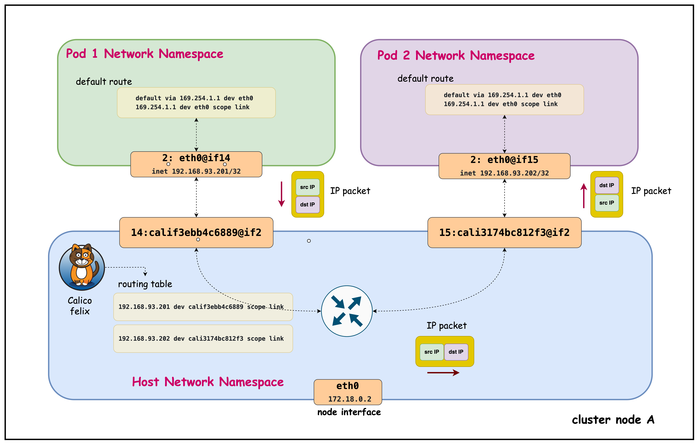
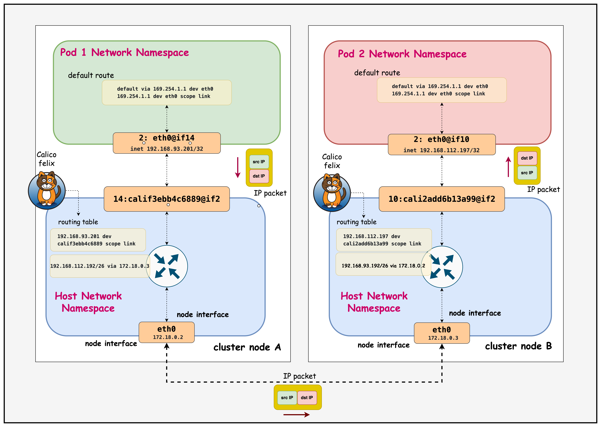

同节点怎么走
两个 Pod 各在独立 namespace，包为什么仍要进入宿主机路由。
ContainerLab · Kind · Calico
沿着 Lesson 03 的六个 multitool Pod，用路由表、TTL 与 tcpdump 还原每一跳。
从现象到数据路径
两个 Pod 各在独立 namespace，包为什么仍要进入宿主机路由。
源节点如何用远端 /26 block 找到目的 Node，再完成最终 /32 交付。
tcpdump 能否看到原始 Pod 源地址，路由输出里的 src 又代表什么。
把 ip route、TTL、Node IP 连通和目的 Pod 抓包拼成证据链。
讲解顺序固定为：先记录动态地址，再发流量，随后查源节点路由，最后在目的端抓包。
containerlab/03-pod-routing
| 配置项 | 课程值 | 含义 |
|---|---|---|
| Kind 节点 | 3 | control-plane + 2 workers |
| 默认 CNI | disabled | 由 Calico 接管 |
| Pod CIDR | 192.168.0.0/16 | Calico IPPool |
| Service CIDR | 10.96.0.0/16 | ClusterIP |
| blockSize | /26 | 默认 64 个地址的节点块 |
| 封装 | VXLANCrossSubnet | Node 跨 underlay 子网才封装 |
| natOutgoing | Enabled | 面向 IPPool 外部流量 |
# pod-routing-no-cni.yaml networking: disableDefaultCNI: true podSubnet: "192.168.0.0/16" serviceSubnet: "10.96.0.0/16" # custom-resources.yaml ipPools: - blockSize: 26 cidr: 192.168.0.0/16 encapsulation: VXLANCrossSubnet natOutgoing: Enabled nodeSelector: all()
deploy.sh
containerlab deploy -t pod-routing.clab.yaml
启动三节点集群并输出 kubeconfig。
kubectl apply -f custom-resources.yaml
脚本等待 apiserver 与 calico TigeraStatus 可用。
kubectl apply -f tools/*.yaml
创建两个 DaemonSet 与各自的 Service。
页面部署示例写 containerlab/pod-routing，仓库实际目录是 containerlab/03-pod-routing。
-l app=multitool 选不到 app=multitool-1 与 app=multitool-2。验证时直接用 kubectl get pods -o wide。
running 还不等于 Ready
$ containerlab inspect -t pod-routing.clab.yaml pod-routing-control-plane running 172.18.0.4 pod-routing-worker running 172.18.0.2 pod-routing-worker2 running 172.18.0.3
这里证明三个 Kind 容器和 Docker underlay 已存在。
$ export KUBECONFIG=$(pwd)/pod-routing.kubeconfig $ kubectl get nodes -o wide control-plane Ready 172.18.0.4 worker Ready 172.18.0.2 worker2 Ready 172.18.0.3
这里证明 kubelet 已注册，节点网络与 Calico readiness 达到工作状态。
先记录 Node IP：跨节点路由的下一跳就是远端 Node IP，不是目的 Pod IP 所属网段里的某个虚拟网关。
multitool-1 + multitool-2
192.168.116.3192.168.116.4192.168.93.201192.168.93.202192.168.112.197192.168.112.198每台可调度节点都放一个副本。清单额外容忍 control-plane taint，所以控制节点也会运行。
同一节点上同时存在两个不同 Pod，才能验证 host FIB 的本地 /32 转发。
IPPool /16 · Node block /26 · Pod /32
192.168.116.0/26
.3.4192.168.93.192/26
.201.202192.168.112.192/26
.197.198每个本地 Pod 都有精确 /32，出口指向对应 cali*。
源节点可以用一个 /26 路由覆盖远端节点上的多个 Pod。
Pod 增删主要影响本地 /32，远端不需要为每个 Pod 维护独立前缀。
multitool-1 on worker
ip addr2: eth0@if13: <UP,LOWER_UP>
mtu 1450
inet 192.168.93.200/32 scope global eth0ip routedefault via 169.254.1.1 dev eth0
169.254.1.1 dev eth0 scope linkPod 只把自己的地址当作本地，不会把同一 /26 的其他 Pod 当作二层邻居。
Calico 的虚拟链路本地下一跳。所有非本地流量先交给宿主机。
为可能发生的 VXLAN 封装保留空间，即使同子网路径当前不封装。
课程本段显示 .200，Pod 列表显示 .201，说明示例来自不同运行时刻。现场必须重新记录。
第一跳相同，Host FIB 决定后半程
目的 Pod 在本机
目的 Pod 在另一台节点
源 Pod 都先经过 veth 进入宿主机。目的 Pod 都由目的节点的本地 /32 完成最后交付。
同节点不离开 Host namespace。跨节点需要 Node underlay 或隧道把包送到远端主机。
192.168.93.201 to 192.168.93.202
kubectl exec -it multitool-1-vmn9d -- sh进入 worker 上的源 Pod。
ip addr && ip route确认源地址 /32 与 169.254.1.1。
nohup ping 192.168.93.202 > samehostping.log 2>&1 &持续产生同节点 ICMP 流量。
cat samehostping.log观察 ttl=63 与亚毫秒级往返时间。
docker exec -it pod-routing-worker /bin/bash进入承载两个 Pod 的 Host namespace。
ip route | grep 192.168.93.202确认目的 /32 指向 cali3174bc812f3。
kubectl exec -it multitool-2-mf8vt -- tcpdump -n在目的 Pod 看请求与回复。
Pod 名称、IP 和 cali* 名称都必须替换成现场值。课程命令用于展示操作顺序。
Host routing, no tunnel
同节点 ping
64 bytes from 192.168.93.202: icmp_seq=1 ttl=63 time=0.104 ms 64 bytes from 192.168.93.202: icmp_seq=2 ttl=63 time=0.095 ms
TTL 是旁证。最终路径仍应结合 Host 路由表和抓包判断，因为应用或操作系统可能使用不同初始 TTL。
pod-routing-worker
worker:/# ip route | grep 192.168.93.202
192.168.93.202 dev cali3174bc812f3 scope link
目的地址精确命中 /32，因此优先于更宽的节点 block 或默认路由。
出口是 host-side veth。它的对端位于目的 Pod namespace，并在 Pod 内命名为 eth0。
内核把目的端看作该接口直接可达，不需要额外网关。
tcpdump -n on multitool-2
00:29:47.987595 IP 192.168.93.201 > 192.168.93.202: ICMP echo request, id 134, seq 42 00:29:47.987607 IP 192.168.93.202 > 192.168.93.201: ICMP echo reply, id 134, seq 42 00:29:48.175723 IP 192.168.93.201 > 192.168.93.202: ICMP echo request, id 131, seq 94 00:29:48.175737 IP 192.168.93.202 > 192.168.93.201: ICMP echo reply, id 131, seq 94
目的 Pod 看到 192.168.93.201，没有 SNAT 成 Node IP。
request 后紧跟 reply，证明返回路径也已建立。
课程输出里 id 134 与 131 表示同时存在多个 ping 进程。
如果想让输出更干净，先停止旧的后台 ping，再启动一条新的测试流。
Pod Routing Same Host

课程仓库：images/pod-routing-same-host.png
192.168.93.201 to 192.168.112.197
kubectl exec -it multitool-1-vmn9d -- sh进入 worker 上的源 Pod。
nohup ping 192.168.112.197 > ping.log 2>&1 &持续产生跨节点流量。
cat ping.log观察 ttl=62。
docker exec -it pod-routing-worker /bin/bash进入源节点。
ip route get 192.168.112.197确认 via 172.18.0.3 dev eth0。
docker exec -it pod-routing-worker2 /bin/bash进入目的节点。
ip route | grep 192.168.112.197确认本地 /32 指向 cali2add6b13a99。
kubectl exec -it multitool-1-7ltxg -- tcpdump -n在目的 Pod 验证原始 Pod IP。
172.18.0.2 to 172.18.0.3
worker ping 172.18.0.3 只验证 Node underlay，不验证 Pod 路由。ip route get 192.168.112.197
pod-routing-worker:/# ip route get 192.168.112.197
192.168.112.197 via 172.18.0.3 dev eth0 src 172.18.0.2 uid 0
cache
匹配这次查询的实际路由是 192.168.112.192/26 via 172.18.0.3 dev eth0。
一个常见误读
ip route get 192.168.112.197
...
src 172.18.0.2这表示如果进程运行在 Host namespace，内核会选择 172.18.0.2 作为源地址。
inner packet src 192.168.93.201 dst 192.168.112.197
主机转发已有报文，Pod 源地址保持不变。目的 Pod 抓包可以直接验证。
判断 NAT 看报文或 NAT 规则：不要只看 ip route get 的 src 字段。
Pod A · source FIB · underlay · destination FIB · Pod B
.93.201 to .112.197VXLAN 外层 Node IPUDP/4789VXLANCrossSubnet
Pod 192.168.93.201Pod 192.168.112.197不出现 VXLAN 外层，Node underlay 必须能承载到远端节点的转发。
underlay 只需认识 Node IP，同时允许 UDP/4789 和匹配路径 MTU。
跨节点 ping
64 bytes from 192.168.112.197: icmp_seq=1 ttl=62 time=0.146 ms 64 bytes from 192.168.112.197: icmp_seq=2 ttl=62 time=0.122 ms
源节点完成一次三层转发，目的节点完成第二次，目的 Pod 因此看到 62。
pod-routing-worker2
worker route:
192.168.112.192/26 via 172.18.0.3 dev eth0这条路把整个目的节点 block 送到 worker2。
worker2 route: 192.168.112.197 dev cali2add6b13a99 scope link
这条 /32 把包送入目的 Pod 的 veth 对端。
tcpdump -n on worker2 Pod
02:15:06.941524 IP 192.168.93.201 > 192.168.112.197: ICMP echo request, id 30, seq 1 02:15:06.941540 IP 192.168.112.197 > 192.168.93.201: ICMP echo reply, id 30, seq 1 02:15:07.955649 IP 192.168.93.201 > 192.168.112.197: ICMP echo request, id 30, seq 2 02:15:07.955663 IP 192.168.112.197 > 192.168.93.201: ICMP echo reply, id 30, seq 2
源地址仍为 worker Pod IP，而不是 172.18.0.2。
本实验直接 ping Pod IP，没有 ClusterIP 与 kube-proxy 参与。
Node IP 同子网，VXLANCrossSubnet 不为该路径添加外层。
Pod Routing Different Host

课程仓库：images/pod-routing-different-host.png
把抓包放在正确位置
tcpdump -ni eth0 icmp看原始 Pod request 离开 namespace。
tcpdump -ni cali... icmp确认包进入 Host 数据路径。
tcpdump -ni any 'icmp or udp port 4789'区分直路由与 VXLAN 外层。
tcpdump -ni eth0 icmp验证最终源地址、目的地址和回复。
抓包回答“线上有什么”，路由表回答“内核准备往哪里发”。两者一起使用才完整。
先确定失败发生在哪一段
kubectl get pods -o wide记录六个 Pod 与 Node。
ip addr && ip route展示 /32 与 169.254.1.1。
ping same-node-pod讲 ttl=63 与本地 /32。
ping remote-node-pod讲 ttl=62 与远端 /26。
tcpdump -n以源地址保留收尾。
| 同节点不通 | 查 veth、本地 /32、NetworkPolicy |
| 同节点通，跨节点不通 | 查 Node IP、远端 /26、rp_filter |
| 跨子网才失败 | 查 UDP/4789、vxlan.calico、MTU |
| 目的端源地址异常 | 查 NAT 规则与测试目标是否在 IPPool 外 |
| 偶发黑洞 | 查 block affinity、旧路由与节点状态 |
演示结束运行 ./destroy.sh，输入 yes 后清理本实验 topology、Kind cluster 与 kubeconfig。
Summary and sources
Pod 使用 /32 和 169.254.1.1。veth 把原始 IP 包送进源节点。
同节点命中本地 /32。跨节点命中远端 /26，并以目的 Node IP 为下一跳。
目的节点用本地 /32 送入 cali*。tcpdump 证明 Pod 源地址保持不变。